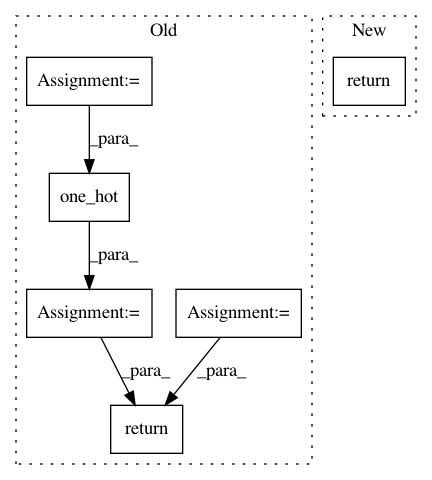

ea556a8f0d9fb0ba1a18b8ee3a08df198dbe418d,python/baseline/tf/lm/model.py,LanguageModelBase,create_loss,#LanguageModelBase#,69
Before Change
def create_loss(self):
with tf.variable_scope("Loss"):
vsz = self.embeddings[self.tgt_key].vsz
targets = tf.reshape(self.y, [-1])
bt_x_v = tf.nn.log_softmax(tf.reshape(self.logits, [-1, vsz]), axis=-1)
one_hots = tf.one_hot(targets, vsz)
example_loss = -tf.reduce_sum(one_hots * bt_x_v, axis=-1)
loss = tf.reduce_sum(example_loss) / self.batchsz
return loss
def make_input(self, batch_dict, train=False):
feed_dict = new_placeholder_dict(train)
After Change
return loss
def create_loss(self):
return self._create_loss(scope="loss{}".format(self.id))
def create_test_loss(self):
return self._create_loss(scope="test_loss")
In pattern: SUPERPATTERN
Frequency: 3
Non-data size: 6
Instances
Project Name: dpressel/mead-baseline
Commit Name: ea556a8f0d9fb0ba1a18b8ee3a08df198dbe418d
Time: 2018-11-13
Author: dpressel@gmail.com
File Name: python/baseline/tf/lm/model.py
Class Name: LanguageModelBase
Method Name: create_loss
Project Name: tensorflow/tpu
Commit Name: 9de6656a779e73ac61995bd87044af21b3f37951
Time: 2018-04-19
Author: frankchn@google.com
File Name: models/experimental/amoeba_net/amoeba_net_model.py
Class Name: InputPipeline
Method Name: input_fn
Project Name: tensorflow/tpu
Commit Name: 62be0d7d2c880127c817b929dbde2c7fbadf87b1
Time: 2018-07-17
Author: bignamehyp@users.noreply.github.com
File Name: models/experimental/amoeba_net/amoeba_net_model.py
Class Name: AmoebaNetEstimatorModel
Method Name: model_fn